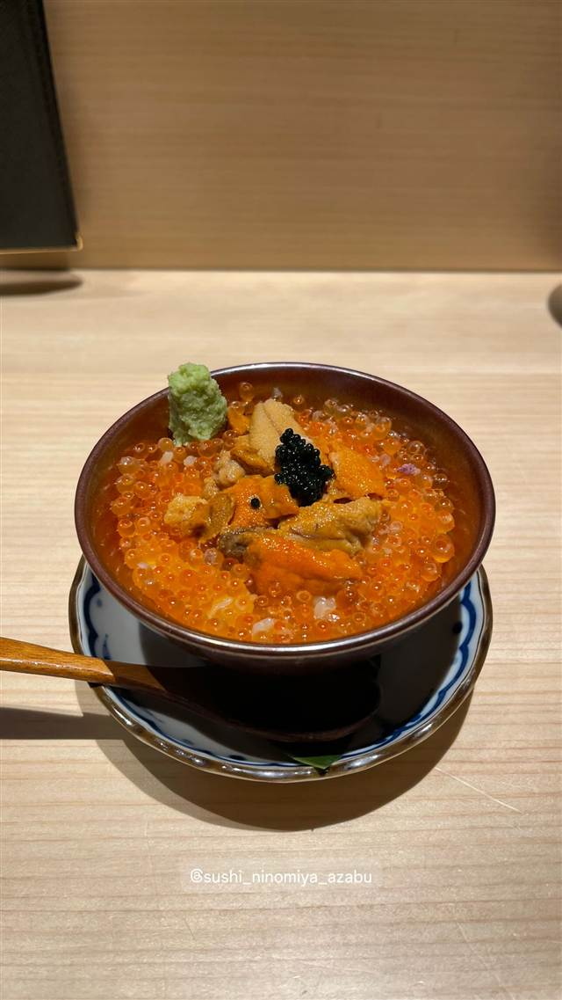

寿司 · 寿司 · 梅ヶ丘
寿司の美登利 総本店（梅ヶ丘）
1963年創業、穴子を一本まるごと握る元祖穴子一本付
梅が丘 美登里寿司
1963年、創業者・土屋菊雄氏が梅ヶ丘で始めた寿司店。市場の魚をボリューム豊かに手頃な価格で提供するスタイルで人気を集め、穴子を一本まるごと握った『穴子一本付』は今も看板メニューとなっている。
TRIVIA
豆知識
- 穴子を一本まるごと握った『穴子一本付』の元祖とされる
- 市場の売れ残りを買い取って安く提供したのが始まりとされる
REVIEWS
世間の評判
3.53食べログ
新鮮で大ぶりなネタと行列の混雑
- ネタが新鮮で大ぶりという価格以上のクオリティを評価する声が多い
- この価格でこのクオリティは素晴らしいというコスパの良さを評価する声が多い
- 行列必須で混雑しやすく値上がりで量が減った気がするという指摘もある
食べログ 口コミ973件
| 創業 | 1963年創業（法人化は1977年） |
|---|---|
| 看板 | 穴子一本握り（元祖穴子一本付）、太巻き |
| こだわり | 穴子を一本まるごと使った握りが名物で、新鮮さとボリューム、手頃な価格を両立させている |
| どこから | 23区の外れ・近郊 |
| 行くなら | 行列 |
| 営業時間 | 月〜金 11:00-14:30、17:00-21:00 土・日 11:00-21:00 |
| 予算 | 昼 ¥2,000～¥2,999 夜 ¥3,000～¥3,999 |
| 場所 | 梅ヶ丘 東京都世田谷区梅丘 |
| メモ | 行列必至の人気店。EPARKで順番待ちの受付が可能 |
食べたもの：寿司盛り合わせ
NEARBY
近い店・同じ系統の店
-
 寿司 銀座
みこ寿司（銀座のみこ寿司）
豊洲の初競りにも参加、名物はウニパラダイス
昼 ¥10,000～¥14,999 夜 ¥10,000～¥14,999
寿司 銀座
みこ寿司（銀座のみこ寿司）
豊洲の初競りにも参加、名物はウニパラダイス
昼 ¥10,000～¥14,999 夜 ¥10,000～¥14,999
-
 寿司 二子玉川駅
Aburi TORA 熟成鮨と炙り鮨 二子玉川ライズ店（旧店名：九州寿司 寿司虎 Aburi Sushi TORA）
冷凍魚を特殊庫で熟成させる氷結熟成鮨は業界初の試みとされる技法
昼 ¥2,000～¥2,999 夜 ¥2,000～¥2,999
寿司 二子玉川駅
Aburi TORA 熟成鮨と炙り鮨 二子玉川ライズ店（旧店名：九州寿司 寿司虎 Aburi Sushi TORA）
冷凍魚を特殊庫で熟成させる氷結熟成鮨は業界初の試みとされる技法
昼 ¥2,000～¥2,999 夜 ¥2,000～¥2,999
-
 寿司 虎ノ門ヒルズ
意気な寿し処阿部 虎ノ門ヒルズ店
シャリは店主の実家、魚沼産コシヒカリを使う江戸前寿司
昼 ¥1,000～¥1,999 夜 ¥6,000～¥7,999
寿司 虎ノ門ヒルズ
意気な寿し処阿部 虎ノ門ヒルズ店
シャリは店主の実家、魚沼産コシヒカリを使う江戸前寿司
昼 ¥1,000～¥1,999 夜 ¥6,000～¥7,999
-
 寿司 三軒茶屋
寿司とワイン サンチャモニカ
握り99円から、ワインと日本酒は499円からの寿司酒場
昼 ¥1,000～¥1,999 夜 ¥5,000～¥5,999
寿司 三軒茶屋
寿司とワイン サンチャモニカ
握り99円から、ワインと日本酒は499円からの寿司酒場
昼 ¥1,000～¥1,999 夜 ¥5,000～¥5,999
-

寿司 麻布十番 日本橋すし処 二ノ宮 麻布十番店 上野本店は年間5万人、赤酢の江戸前寿司を一貫80円から 昼 ¥4,000～¥4,999 夜 ¥6,000～¥7,999 -
 寿司 赤坂
梅丘寿司の美登利 赤坂店
創業時からの名物、市場の残りネタも生かした穴子一本付
昼 ¥1,000～¥1,999 夜 ¥3,000～¥3,999
寿司 赤坂
梅丘寿司の美登利 赤坂店
創業時からの名物、市場の残りネタも生かした穴子一本付
昼 ¥1,000～¥1,999 夜 ¥3,000～¥3,999